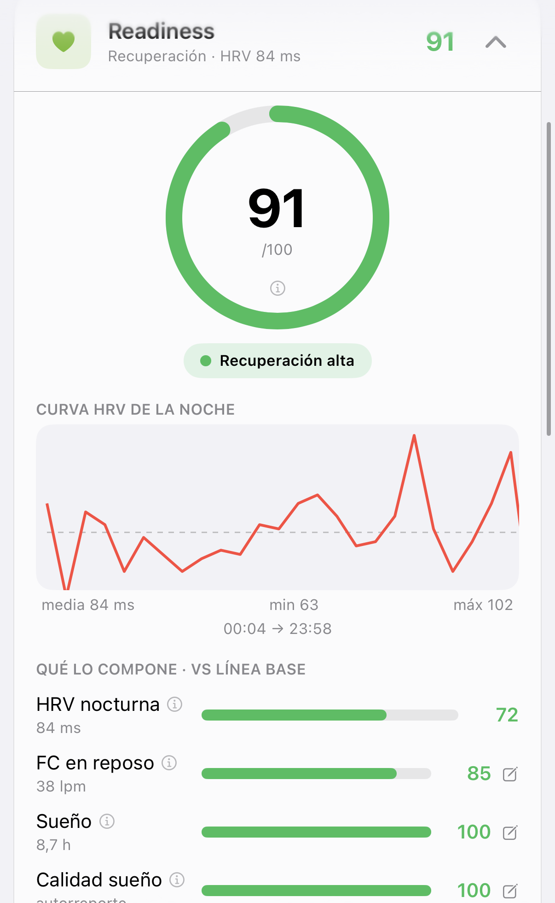

Indicadores Glucovibes
¿Con cuánta energía te has levantado hoy?
No es casualidad: es tu Readiness.
Desliza →
Hacemos visible lo invisible
No es casualidad: es tu Readiness.
Desliza →

Captura real de la app Glucovibes de una Viber.
Necesita varios días de datos para calibrarse contigo.
glucovibes.com